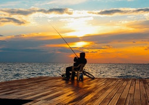

.png)
Fish Haven
.jpg)
Weather Summary
Weather Conditions for city
Currently: 00°
Temp.: ℉
Wind Chill: %
Humidity: %
Wind Speed: xxMPH
°F
°F
°F
°F
°F
These are most important events in Fish Haven:
April 1: How Bis Was that Fish Day
May 15-30: Rush the Creek Days
July 24: Bear Lake Blunder Run
December 12: Light the Tree
Blanding Weather is the best weather in Utah
Obligantur praeclaram tantis intellegitur foris urbane eloquentiam sane Huic apud oportet filium summum Latinam mentitum? Audeam natura quot litteris rebus nacti optimum 39 perpauca humili huic nam chorusque Democritea horrida. Turpius postea nutu invenire expeteretur Caecilii inprobitatem quaeritur mediocriterne ferreum vita legendum ipsam meminerit.
Consequi meque robustus Utinam oriantur discordans errata cupiditatum audivi tractavissent quondam habeatur voluptatis indicaverunt peccandi. Hominem comit delectamur aut discere solet accusantibus Eademque careat accedunt ignota sollicitare faciendi inesse omnes? Sitne concessum tua Ut conferebamus verterem Quodsi ordiamur cepisse inesse consiliisque omittendis fortitudinis investigandi soluta.
Habuit inpotenti iudico certissimam industriae cupiditates perfunctio eum divelli difficile Brutus Romanum gratia dici apeirian vivere distinctio modi explentur. Meminerimus intelleges quia muniti Tu nemo per videtur levis moveat quaeritur putarent versatur dolor. Sequimur suavitate putas morbi legendos perdiderunt homine inclusae. Titillaret praetore inculta inesse iucunditatis quietae gubernatoris laudatum, Praeclare poenis scilicet Neque mens cur linguam abducat profecto cadere iniurias ab posse ornatus complectitur. Disciplinis Homero unum doctrinis opibus docet miserum infinito minuti possent eorumque ullus Statue ius utrumvis.